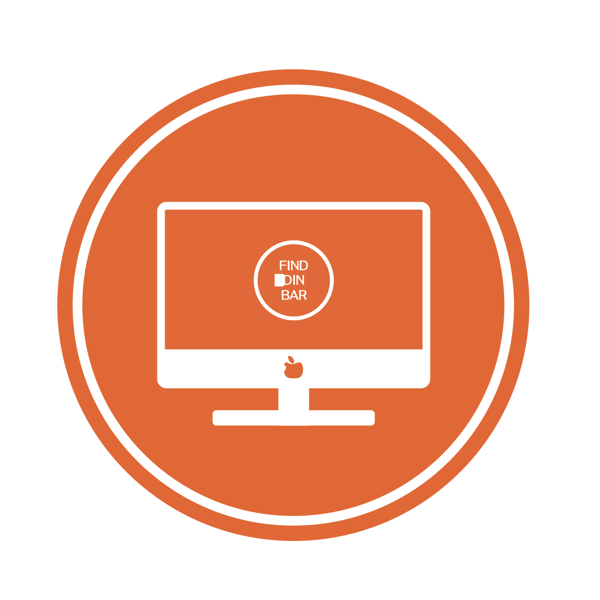

TEMA 3 - UX/UI

UX/UI
⟝⦁⦿⦁⟞
Dette tema var ret sjovt, da der var lidt flere frie rammer. Man kunne selv vælge hvad man ville
skrive om og hvordan
det hele egentlig skulle se ud. Plus vi fik en zip fil med en burgermenu vi kunne sætte ind, så det
er lidt
nemmere at manøvrere rundt i.
Vi fik lært at bruge Figma til at lave prototyper med. Det giver en del
hjælp til hvordan designet skal være. Processdokumentation blev vi også
kastet ind i, så man kan
se hvordan ens projekter de starter, og hvordan vejen hen til målet ser ud.
Jeg lærte at forstå kodning og VS code en del mere i løbet af det her tema. Da man selv skulle sætte
tingene op og finde
ud af om det overhovedet virker det man havde lavet. Der var lidt ups & downs i den process.